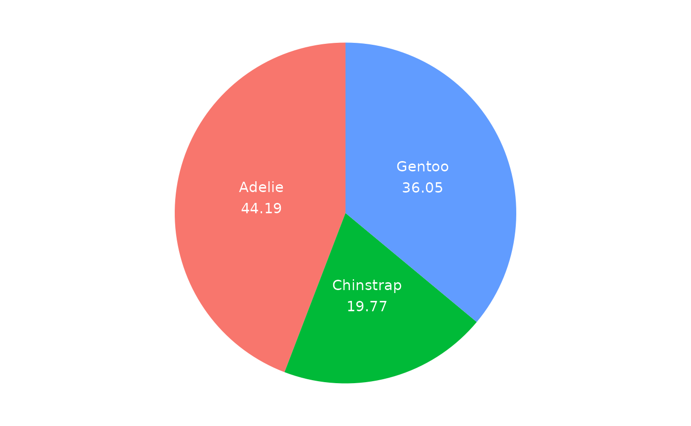
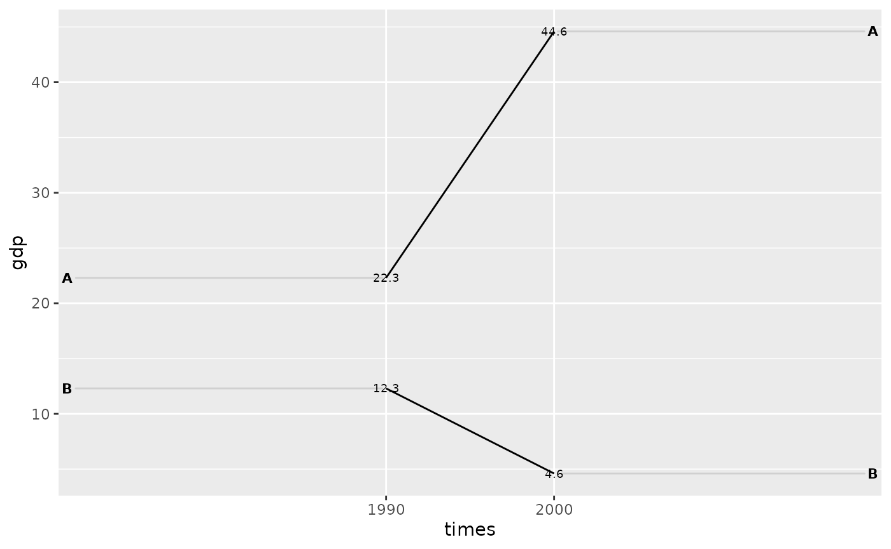

library(edgar)
#> ── Attaching packages ─────────────────────────────────────────── edgar 0.0.1 ──
#> ✔ dplyr 1.1.4 ✔ ggplot2 3.5.1
#> ✔ tidyr 1.3.1
library(palmerpenguins)A Pie Chart
I don’t like pie charts, because they are hard to read. It is hard to compare the size of the slices and the slices do not display the underlying data. However, if someone asks you to make a pie chart, here is a simple wrapper function that makes a pie chart using ggplot2. The ggpie function takes a data frame and a fill argument that specifies the column to use for the slices. The next code shows an example using the penguins data set.
#ggpie is a wrapper around ggplot2 that makes it easy to make pie charts
ggpie(penguins, fill = species)
Slope Chart
Slope charts are cool: they show the change in a variable over time for different groups. The ggslope function is a wrapper around ggplot2 that makes it easy to make slope charts. The function takes a data frame, a times argument, an outcome argument, and a group argument.
The next code shows an example using a data frame with GDP and income fake data for two countries over two time periods.
#toy data
df <- tidyr::tribble(
~times, ~country, ~gdp, ~inc,
"1990", "A", 22.3, TRUE,
"2000", "A", 44.6, TRUE,
"1990", "B", 12.3, FALSE,
"2000", "B", 4.6, FALSE
)
# ggslope is a wrapper around ggplot2
ggslope(df,
times = times,
outcome = gdp,
group = country)